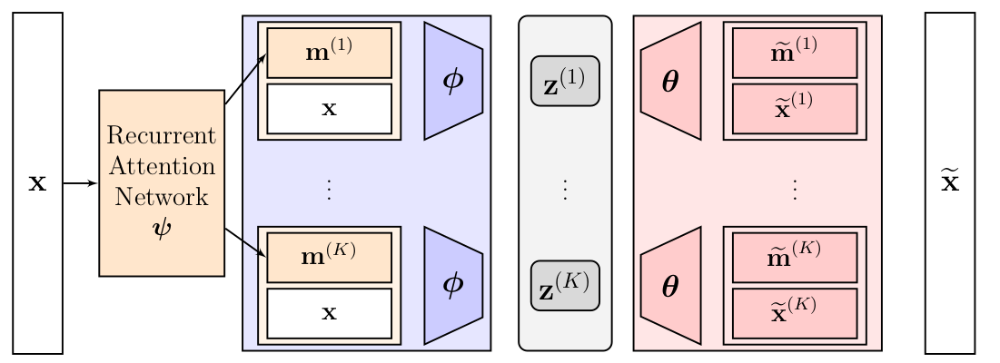
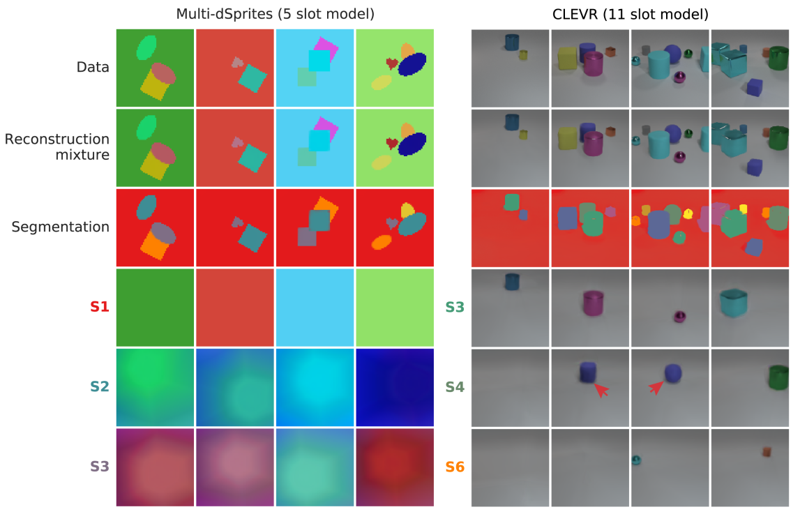
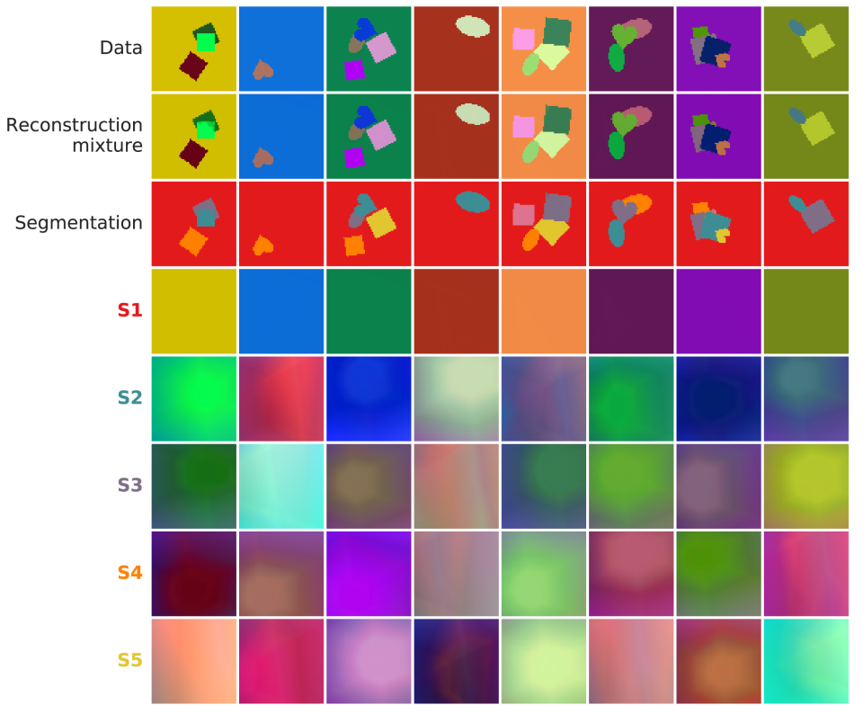
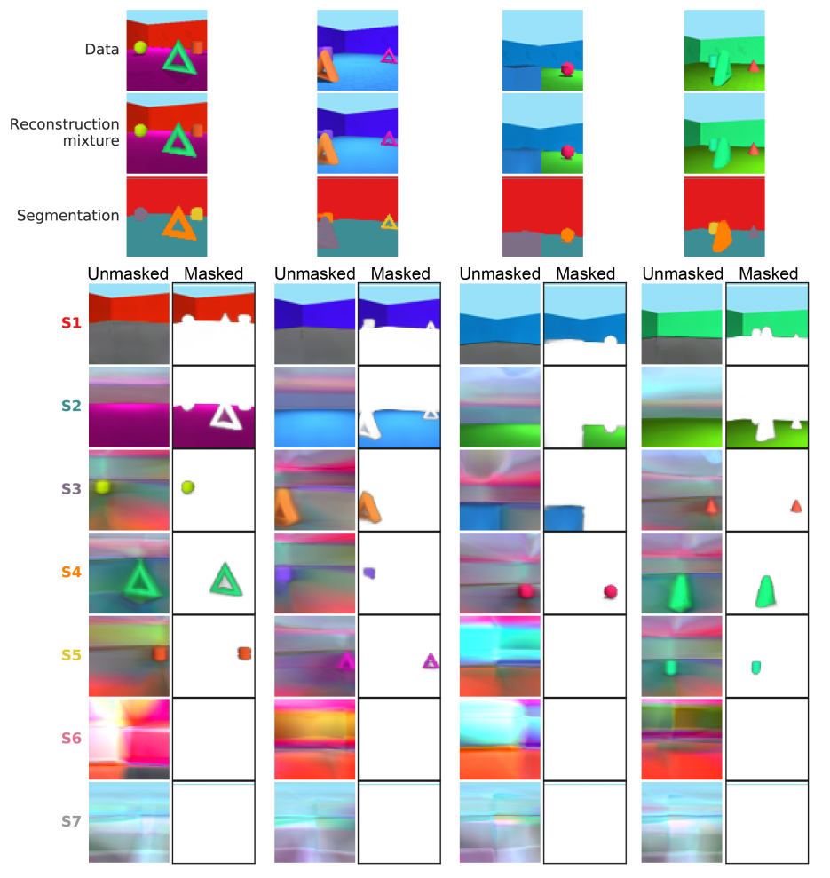

Burgess et al. (2019) developed the Multi-Object Network (MONet) as an end-to-end trainable model to decompose images into meaningful entities such as objects. Similar to AIR, the whole training process is unsupervised, i.e., there are no labeled segmentations, handcrafted bounding boxes or whatsoever. In essence, their model combines a Variational Auto-Encoder (VAE) with a recurrent attention network (U-Netsegmentation network) to spatially decompose scenes into attention masks (over which the VAE needs to reconstruct masked regions) and latent representations of each masked region. In contrast to AIR, MONet does not contain a fully generative model and its latent space is less structured. As a proof of concept, they show that their model could learn disentangled representations in a common latent code (i.e., representations of object features in latent space) and object segmentations (i.e., attention masks on the original image) on non-trivial 3D scenes.
Model Description
MONet builds upon the inductive bias that the world (or rather simple images of the world) can often be approximated as a composition of individual objects with the same underlying structure (i.e., different instantiations of the same class). To put this into practice, Burgess et al. (2019) developed a conditional generative sampling scheme in which scenes are spatially decomposed into parts that have to be individually modelled through a common representation code. The architecture incorporates two kind of neural networks that are trained in tandem:
Attention Network: Its purpose is to deliver attention masks \(\textbf{m}_k\) for the image such that the whole image is completely spatially decomposed into \(K\) parts, i.e., \(\sum_{k=1}^K
\textbf{m}_k = \textbf{1}\). Ideally, after training each mask focuses on a semantically meaningful element/segment of the image. Thus, it may also be understood as a segmentation network.
To allow for a variable number of attention masks, Burgess et al. (2019) use a recurrent neural network \(\alpha_{\boldsymbol{\psi}}\) for the decomposition. Therein, an auto-regressive process is defined for the ongoing state. This state is called scope\(\textbf{s}_k \in [0, 1]^{W\times
H}\) (image width \(W\) and height \(H\)) as it is used to track the image parts that remain to be explained, i.e., the scope for the next state is given by
i.e., at each recursion the remaining part to be explained \(\textbf{s}_{k}\) is divided into a segmentation mask \(\textbf{m}_{k+1}\) and a new scope \(\textbf{s}_{k+1}\) such that with \(\textbf{s}_0=\textbf{1}\) the entire image is explained by the resulting segmentation masks, i.e., \(\sum_{k=1}^K \textbf{m}_k = \textbf{1}\).
Component VAE: Its purpose is to represent each masked region in a common latent code, i.e., each segment is encoded by the same VAE1. The encoder distribution \(q_{\boldsymbol{\phi}}
\left(\textbf{z}_k | \textbf{x}, \textbf{m}_k\right)\) is conditioned both on the input image \(\textbf{x}\) and the corresponding attention mask \(\textbf{m}_k\). I.e., instead of feeding each masked region into the network, Burgess et al. (2019) use the whole image \(\textbf{x}\) concatenated with the corresponding attention mask \(\textbf{m}_k\). As a result, we get \(K\) different latent codes \(\textbf{z}_k\) (termed “slots”) which represent the features of each object (masked region) in a common latent/feature space across all objects.
The decoder distribution \(p_{\boldsymbol{\theta}}\) is required to reconstruct the image component \(\widetilde{\textbf{x}}_k \sim p_{\boldsymbol{\theta}} \left( \textbf{x} | \textbf{z}_k \right)\) and the attention masks2\(\widetilde{\textbf{m}}_k \sim p_{\boldsymbol{\theta}}
\left(\textbf{c} | \textbf{z}_k \right)\) from these latent codes. Note that \(p_{\boldsymbol{\theta}} \left(\textbf{c} | \textbf{z}_k
\right)\) defines the mask distribution of the Component VAE, whereas \(q_{\boldsymbol{\psi}} \left(\textbf{c} | \textbf{x}\right)\) denotes the mask distribution of the attention network3.
Importantly, each of the \(k\) component reconstruction distributions is multiplied with the corresponding attention mask \(\textbf{m}_k\), i.e.,
where the sum can be understood as the reconstruction distribution of the whole image (mixture of components) conditioned on the latent codes \(\textbf{z}_k\) and the attention masks \(\textbf{m}_k\). Clearly, the reconstructions \(\widetilde{\textbf{x}}_k \sim p_{\boldsymbol{\theta}} \left(
\textbf{x} | \textbf{z}_k\right)\) are unconstrained outside of the masked regions (i.e., where \(m_{k,i} = 0\)).
Note that they use a prior for the latent codes \(\textbf{z}_k\), but not for the attentions masks \(\textbf{m}_k\). Thus, the model is not fully generative, but rather a conditional generative model.
The figure below summarizes the whole architecture of the model by showing the individual components (attention network, component VAE) and their interaction.

Schematic of MONet. A recurrent attention network is used to obtain the attention masks \(\textbf{m}^{(i)}\). Afterwards, a group structured representation is retrieved by feeding each concatenation of \(\textbf{m}^{(i)}, \textbf{x}\) through the same VAE with encoder parameters \(\boldsymbol{\phi}\) and decoder parameters \(\boldsymbol{\theta}\). The outputs of the VAE are the unmasked image reconstructions \(\widetilde{\textbf{x}}^{(i)}\) and mask reconstructions \(\widetilde{\textbf{m}}^{(i)}\). Lastly, the reconstructed image is assembled using the deterministic attention masks \(\textbf{m}^{(i)}\) and the sampled unmasked image reconstructions \(\widetilde{\textbf{x}}^{(i)}\).
The whole model is end-to-end trainable with the following loss function
\[
\begin{align}
\mathcal{L}\left(\boldsymbol{\phi}; \boldsymbol{\theta};
\boldsymbol{\psi}; \textbf{x} \right) &= \underbrace{- \log \left( \sum_{k=1}^K \textbf{m}_k \odot p_{\boldsymbol{\theta}} \left(\textbf{x} |
\textbf{z}_k \right)\right)}_{\text{Reconstruction Error between }
\widetilde{\textbf{x}} \text{ and } \textbf{x}} + \beta
\underbrace{D_{KL} \left( \prod_{k=1}^K q_{\boldsymbol{\phi}} \left(\textbf{z}_k |
\textbf{x}, \textbf{m}_k\right) || p(\textbf{z})
\right)}_{\text{Regularization Term for Distribution of }\textbf{z}_k}\\
&+ \gamma \underbrace{D_{KL} \left( q_{\boldsymbol{\psi}} \left( \textbf{c} |
\textbf{x} \right) || p_{\boldsymbol{\theta}} \left( \textbf{c} | \{
\textbf{z}_k \} \right) \right)}_{\text{Reconstruction Error between }
\widetilde{\textbf{m}}_k \text{ and } \textbf{m}_k},
\end{align}
\]
where the first term measures the reconstruction error of the fully reconstructed image (sum) as mentioned above. The second term is the KL divergence between the variational posterior approximation factorized across slots, i.e., \(q_{\boldsymbol{\phi}}
\left( \textbf{z} | \textbf{x} \right) = \prod_{k=1}^K
q_{\boldsymbol{\phi}} \left(\textbf{z}_k| \textbf{x},
\textbf{m}_k\right)\), and the prior of the latent distribution \(p(\textbf{z})\). As this term pushes the encoder distribution to be close to the prior distribution, it is commonly referred to as regularization term. It is weighted by the tuneable hyperparameter \(\beta\) to encourage learning of disentanglement latent representions, see Higgins et al. (2017). Note that the first two terms are derived from the standard VAE loss. The third term is the KL divergence between the attention mask distribution generated by the attention network \(q_{\boldsymbol{\psi}} \left( \textbf{c} | \textbf{x} \right)\) and the component VAE \(p_{\boldsymbol{\theta}}
\left(\textbf{c} |\{\textbf{z}_k\} \right)\), i.e., it forces these distributions to lie close to each other. It could be understood as the reconstructions error of the VAE’s attention masks \(\widetilde{\textbf{m}}_k\), as it forces them to lie close to the attention masks \(\textbf{m}_k\) of the attention network. Note however that the attention network itself is trainable, thus the network could also react by pushing the attention mask distribution towards the reconstructed mask distribution of the VAE. \(\gamma\) is a tuneable hypeterparameter to modulate the importance of this term, i.e., increasing \(\gamma\) results in close distributions.
Motivation: The model aims to produce semantically meaningful decompositions in terms of segmentation and latent space attributes. Previous work such as the Spatial Broadcast decoder has shown that VAEs are extensively capable of decomposing simple single-object scenes into disentangled latent space representations. However, even simple multi-object scenes are far more challenging to encode due to their complexity. Burgess et al. (2019) hypothesize that exploiting the compositional structure of scenes (inductive bias) may help to reduce this complexity. Instead of decomposing the entire multi-object scene in one sweep, MONet breaks the image in multiple (\(K\)) tasks which it decomposes with the same VAE4. Restricting the model complexity of the decoder (e.g., by using few layers), forces the model to produce segmentation with similar tasks, i.e., segmentations over structurally similar scene elements such that the VAE is capable of solving all tasks (note that this is a hypothesis). The authors argue that optimization should push towards a meaningful decomposition. Furthermore, they empirically validate their hypothesis by showing that for the Objects Room dataset the reconstruction error is much lower when the ground truth attention masks are given compared to an all-in-one (single sweep) or a wrong masks situation.
Adding some more motivation: It might be helpful to think about the data-generating process: Commonly, artificial multi-object scenes are created by adding each object successively to the image. Assuming that each of these objects is generated from the same class with different instantiations (i.e., different color/shape/size/…), it seems most natural to recover this process by decomposing the image and then decoding each part.
Implementation
Burgess et al. (2019) tested MONet on three different multi-object scene datasets (Objects Room, CLEVR, Multi-dSprites) and showed that their model could successively learn to
decompose scenes into semantically meaningful parts, i.e., produce meaningful segmentation masks,
represent each segmented object in a common (nearly disentangled) latent code, and
generalize to unseen scene configurations
without any supervision. Notably, MONet can handle a variable number of objects by producing latent codes that map to an empty scene, see image below. Furthermore, it turned out that MONet is also able to deal with occlusions: In the CLEVR dataset the unmasked reconstructions could even recover occluded objects, see image below. Burgess et al. (2019) argue that this indicates how MONet is learning from and constrained by the structure of the data.

MONet Paper Results: Decomposition on Multi-dSprties and CLEVR images. First row shows the input image, second and third row the corresponding reconstructions and segmentations by MONet (trained for 1,000,000 iterations). The last three rows show the unmasked component reconstructions from some chosen slots (indicated by \(S\)). Red arrows highlight occluded regions of shapes that are completed as full shapes. Taken from Burgess et al. (2019).
The following reimplementation aims to reproduce some of these results while providing an in-depth understanding of the model architecture. Therefore, a dataset that is similar to the Multi-dSprites dataset is created, then the whole model (as faithfully as possible close to the original architecture) is reimplemented and trained in Pytorch and lastly, some useful visualizations of the trained model are created.
Data Generation
A dataset that is similar in spirit to the Multi-dSprites will be generated. Burgess et al. (2019) generated this dataset by sampling \(1-4\) images randomly from the binary dsprites dataset(consisting of \(737,280\) images), colorizing these by sampling from a uniform random RGB color and compositing those (with occlusion) onto a uniform random RGB background.
To reduce training time, we are going to generate a much simpler dataset of \(x\) images with two non-overlaping objects (square or circle) and a fixed color space (red, green or aqua) for these objects, see image below. The dataset is generated by sampling uniformly random from possible latent factors, i.e., random non-overlaping positions for the two objects, random object constellations and random colors from color space, see code below image.
MONet is a rather sophisticated model composing two powerful neural network architectures in a reasonable way. One major downside of such complex models is that they comprise lots of hyperparamters from which much remains unknown such as sensitivity to small pertubations (e.g., changing layers within network architectures or parameters \(\beta\), \(\gamma\)). Therefore, the model implementation aims to be as close as possible to the original model. Note that Burgess et al. (2019) did not publish their implementation.
For the sake of simplicity, this section is divided into four parts:
Attention Network: The architecture of the recurrent neural network \(\boldsymbol{\alpha}_{\psi}\) is described in appendix B.2 of Burgess et al. (2019). Basically, it consists of a slightly modified U-Net architecture that (at the \(k\)th step) takes as input the concatenation of the image \(\textbf{x}\) and the current scope mask in log units \(\log \textbf{s}_k\). The output of the modified U-Net is a one channel image \(\textbf{o} \in ]-\infty, + \infty[^{W\times
H}\) in which each entry can be interpreted as the logits probability \(\text{logits }\boldsymbol{\alpha}_k\). A sigmoid layer can be used to transform these logits into probabilities, i.e.,
i.e., a LogSigmoid layer can be used (instead of a sigmoid layer with applying logarithm to both outputs) to speed up the computations. From the model description above, it follows
i.e., the output of the \(k\)th step can be computed by simply adding the log current scope \(\log \textbf{s}_k\) to each log probability. As a result, the next log attention mask \(\log \textbf{m}_{k+1}\) and next log scope \(\log \textbf{s}_{k+1}\) can be retrieved. Note that using log units instead of standard units is beneficial as it ensures numerical stability while simplifying the optimization due to an increased learning signal.
The code below summarizes the network architecture, Burgess et al. (2019) did not state the channel dimensionality within the U-Net blocks explicitely. However, as they mentioned to use a U-Net blueprint, it is assumed that they use the same dimensionality as in the original U-Net paper. To reduce training time and memory capacity, the following implementation caps the channel dimensionality in the encoder to 64 output channels.
Code
import torch.nn as nnimport torch.nn.functional as Fclass UNet(nn.Module):"""U-Net architecture with blocks proposed by Burgess et al. (2019) Attributes: encoder_blocks (list): u_net blocks of encoder path decoder_blocks (list): u_net blocks of decoder path bottleneck_MLP (list): bottleneck is a 3-layer MLP with ReLUs out_conv (nn.Conv2d): convolutional classification layer """def__init__(self):super().__init__()self.encoder_blocks = nn.ModuleList( [ UNet._block(4, 16), # [batch_size, 16, 64, 64] UNet._block(16, 32), # [batch_size, 32, 32, 32] UNet._block(32, 64), # [batch_size, 64, 16, 16] UNet._block(64, 64), # [batch_size, 64, 8, 8] UNet._block(64, 64), # [batch_size, 75, 4, 4] ] )self.bottleneck_MLP = nn.Sequential( nn.Flatten(), # [batch_size, 512*4*4] nn.Linear(64*4*4, 128), nn.ReLU(), nn.Linear(128, 128), # [batch_size, 512*4*4] nn.ReLU(), nn.Linear(128, 64*4*4), # [batch_size, 512*4*4] nn.ReLU(), # reshaped into [batch_size, 512, 4, 4] )self.decoder_blocks = nn.ModuleList( [ UNet._block(128, 64), # [batch_size, 64, 4, 4] UNet._block(128, 64), # [batch_size, 64, 8, 8] UNet._block(128, 32), # [batch_size, 32, 16, 16] UNet._block(64, 16), # [batch_size, 32, 32, 32] UNet._block(32, 16), # [batch_size, 64, 64, 64] ] )self.out_conv = nn.Conv2d(16, 1, kernel_size=(1,1), stride=1)returndef forward(self, x):# go through encoder path and store intermediate results skip_tensors = []for index, encoder_block inenumerate(self.encoder_blocks): out = encoder_block(x) skip_tensors.append(out)# no resizing in the last blockif index <len(self.encoder_blocks) -1: # downsample x = F.interpolate( out, scale_factor=0.5, mode="nearest", recompute_scale_factor=False ) last_skip = out# feed last skip tensor through bottleneck out_MLP =self.bottleneck_MLP(last_skip)# reshape output to match last skip tensor out = out_MLP.view(last_skip.shape)# go through decoder path and use skip tensorsfor index, decoder_block inenumerate(self.decoder_blocks): inp = torch.cat((skip_tensors[-1- index], out), 1) out = decoder_block(inp)# no resizing in the last blockif index <len(self.decoder_blocks) -1: # upsample out = F.interpolate(out, scale_factor=2, mode="nearest") prediction =self.out_conv(out)return prediction@staticmethoddef _block(in_channels, out_channels):"""U-Net block as described by Burgess et al. (2019)""" u_net_block = nn.Sequential( nn.Conv2d( in_channels, out_channels, kernel_size=(3, 3), stride=1, padding=1, bias=False, ), nn.InstanceNorm2d(num_features=out_channels, affine=True), nn.ReLU(), )return u_net_blockclass AttentionNetwork(nn.Module):def__init__(self):super().__init__()self.unet = UNet()returndef forward(self, x, num_slots): log_s_k = torch.zeros_like(x[:, 0:1, :, :])# initialize list to store intermediate results log_m = []for slot inrange(num_slots -1): inp = torch.cat((x, log_s_k), 1) alpha_logits =self.unet(inp) # [batch_size, 1, image_dim, image_dim]# transform into log probabilties log (alpha_k) and log (1 - alpha_k) log_alpha_k = F.logsigmoid(alpha_logits) log_1_m_alpha_k =-alpha_logits + log_alpha_k# compute log_new_mask, log_new_scope log_new_mask = log_s_k + log_alpha_k log_new_scope = log_s_k + log_1_m_alpha_k# store intermediate results in list log_m.append(log_new_mask)# update log scope log_s_k = log_new_scope log_m.append(log_s_k)# convert list to tensor [batch_size, num_slots, 1, image_dim, image_dim] log_m = torch.cat(log_m, dim=1).unsqueeze(2)return log_m
Component VAE: The architectures for the encoder \(q_{\boldsymbol{\phi}}\) and decoder \(p_{\boldsymbol{\theta}}\) neural networks are described in appendix B.1 of Burgess et al. (2019). Basically, the encoder \(q_{\boldsymbol{\phi}}(\textbf{z}_k | \textbf{x}, \textbf{m}_k)\) is a typical CNN that takes the concatentation of an image \(\textbf{x}\) and a segmentation mask in logaritmic units \(\log \textbf{m}_k\) as input to compute the mean \(\boldsymbol{\mu}_{E, k}\) and logarithmed variance \(\boldsymbol{\sigma}^2_{E,k}\) of the Gaussian latent space distribution \(\mathcal{N} \left(
\boldsymbol{\mu}_{E, k}, \text{diag}\left(\boldsymbol{\sigma}^2_{E,k} \right)
\right)\). Sampling from this distribution is avoided by using the reparametrization trick, i.e., the latent variable \(\textbf{z}_k\) is expressed as a deterministic variable5
The component VAE uses a Spatial Broadcast decoder\(p_{\boldsymbol{\theta}}\) to transform the latent vector \(\textbf{z}_k\) into the reconstructed image component \(\widetilde{\textbf{x}}_k \sim p_{\boldsymbol{\theta}}
\left(\textbf{x} | \textbf{z}_k \right)\) and mask \(\widetilde{\textbf{m}}_k \sim p_{\boldsymbol{\theta}} \left(
\textbf{c}|\textbf{z}_k \right)\). Burgess et al. (2019) chose independent Gaussian distributions with fixed variances for each pixel as the reconstructed image component distributions \(p_{\boldsymbol{\theta}} \left( x_i | \textbf{z}_k \right) \sim
\mathcal{N} \left(\mu_{k,i} (\boldsymbol{\theta}), \sigma_k^2
\right)\) and independent Bernoulli distributions for each pixel as the reconstructed mask distributions \(p\left(c_{k, i}| \textbf{z}_k
\right) \sim \text{Bern} \left( p_{k,i}
(\boldsymbol{\theta})\right)\). I.e., the decoder output is a 4 channel image from which the first three channels correspond to the 3 RGB channels for the means of the image components \(\boldsymbol{\mu}_k\) and the last channel corresponds to the logits probabilities of the Bernoulli distribution \(\text{logits }\textbf{p}_k\).
Code
class CNN_VAE(nn.Module):"""simple CNN-VAE class with a Gaussian encoder (mean and diagonal variance structure) and a Gaussian decoder with fixed variance (decoder is implemented as a Spatial Broadcast decoder) Attributes latent_dim (int): dimension of latent space encoder (nn.Sequential): encoder network for mean and log_var decoder (nn.Sequential): spatial broadcast decoder for mean (fixed var) x_grid (torch tensor): appended x coordinates for spatial broadcast decoder y_grid (torch tensor): appended x coordinates for spatial broadcast decoder """def__init__(self):super(CNN_VAE, self).__init__()self.latent_dim =8self.encoder = nn.Sequential(# shape: [batch_size, 4, 64, 64] nn.Conv2d(4, 32, kernel_size=(3,3), stride=2, padding=1), nn.ReLU(),# shape: [batch_size, 32, 32, 32] nn.Conv2d(32, 32, kernel_size=(3,3), stride=2, padding=1), nn.ReLU(),# shape: [batch_size, 32, 16, 16] nn.Conv2d(32, 64, kernel_size=(3,3), stride=2, padding=1), nn.ReLU(),# shape: [batch_size, 64, 8, 8] nn.Conv2d(64, 64, kernel_size=(3,3), stride=2, padding=1), nn.ReLU(),# shape: [batch_size, 64, 4, 4], nn.Flatten(),# shape: [batch_size, 1024] )self.MLP = nn.Sequential( nn.Linear(64*4*4, 256), nn.ReLU(), nn.Linear(256, 2*self.latent_dim), )# spatial broadcast decoder configuration img_size =64# "input width and height of CNN both 8 larger than target output" x = torch.linspace(-1, 1, img_size +8) y = torch.linspace(-1, 1, img_size +8) x_grid, y_grid = torch.meshgrid(x, y)# reshape into [1, 1, img_size, img_size] and save in state_dictself.register_buffer('x_grid', x_grid.view((1, 1) + x_grid.shape).clone())self.register_buffer('y_grid', y_grid.view((1, 1) + y_grid.shape).clone())self.decoder = nn.Sequential(# shape [batch_size, latent_dim + 2, 72, 72] nn.Conv2d(in_channels=self.latent_dim+2, out_channels=16, stride=(1, 1), kernel_size=(3,3)), nn.ReLU(),# shape [batch_size, 16, 70, 70] nn.Conv2d(in_channels=16, out_channels=16, stride=(1,1), kernel_size=(3, 3)), nn.ReLU(),# shape [batch_size, 16, 68, 68] nn.Conv2d(in_channels=16, out_channels=16, stride=(1,1), kernel_size=(3, 3)), nn.ReLU(),# shape [batch_size, 16, 66, 66] nn.Conv2d(in_channels=16, out_channels=16, stride=(1,1), kernel_size=(3, 3)),# shape [batch_size, 4, 64, 64] nn.ReLU(), nn.Conv2d(in_channels=16, out_channels=4, stride=(1,1), kernel_size=(1, 1)), )returndef forward(self, x): [z, mu_E, log_var_E] =self.encode(x) x_rec =self.decode(z)return x_rec, z, mu_E, log_var_Edef encode(self, x): out_encoder =self.MLP(self.encoder(x)) mu_E, log_var_E = torch.chunk(out_encoder, 2, dim=1)# sample noise variable for each batch epsilon = torch.randn_like(log_var_E)# get latent variable by reparametrization trick z = mu_E + torch.exp(0.5* log_var_E) * epsilonreturn [z, mu_E, log_var_E]def decode(self, z): batch_size = z.shape[0]# reshape z into [batch_size, latent_dim, 1, 1] z = z.view(z.shape + (1, 1))# tile across image [batch_size, latent_im, 64+8, 64+8] z_b = z.repeat(1, 1, 64+8, 64+8)# upsample x_grid and y_grid to [batch_size, 1, 64+8, 64+8] x_b =self.x_grid.repeat(batch_size, 1, 1, 1) y_b =self.y_grid.repeat(batch_size, 1, 1, 1)# concatenate vectors [batch_size, latent_dim+2, 64+8, 64+8] z_sb = torch.cat((z_b, x_b, y_b), dim=1)# apply convolutional layers mu_D mu_D =self.decoder(z_sb)return mu_Dclass ComponentVAE(CNN_VAE):"""Component VAE class for use in MONet as proposed by Burgess et al. (2019) Attributes: #################### CNN_VAE ######################## encoder (nn.Sequential): encoder network for mean and log_var decoder (nn.Sequential): decoder network for mean (fixed var) img_dim (int): image dimension along one axis expand_dim (int): expansion of latent image to accomodate for lack of padding x_grid (torch tensor): appended x coordinates for spatial broadcast decoder y_grid (torch tensor): appended x coordinates for spatial broadcast decoder ##################################################### img_channels (int): number of channels in image """def__init__(self,):super().__init__()self.img_channels =3returndef forward(self, image, log_mask, deterministic=False):""" parellize computation of reconstructions Args: image (torch.tensor): input image [batch, img_channels, img_dim, img_dim] log_mask (torch.tensor): all seg masks [batch, slots, 1, img_dim, img_dim] Returns: mu_z_k (torch.tensor): latent mean [batch, slot, latent_dim] log_var_z_k (torch.tensor): latent log_var [batch, slot, latent_dim] z_k (torch.tensor): latent log_var [batch, slot, latent_dim] x_r_k (torch.tensor): img reconstruction [batch, slot, img_chan, img_dim, img_dim] logits_m_r_k (torch.tensor): mask recons. [batch, slot, 1, img_dim, img_dim] """ num_slots = log_mask.shape[1]# create input [batch_size*num_slots, image_channels+1, img_dim, img_dim] x = ComponentVAE._prepare_input(image, log_mask, num_slots)# get encoder distribution parameters [batch*slots, latent_dim] [z_k, mu_z_k, log_var_z_k] =self.encode(x)if deterministic: z_k = mu_z_k# get decoder dist. parameters [batch*slots, image_channels, img_dim, img_dim] [x_r_k, logits_m_r_k] =self.decode(z_k)# convert outputs into easier understandable shapes [mu_z_k, log_var_z_k, z_k, x_r_k, logits_m_r_k] = ComponentVAE._prepare_output( mu_z_k, log_var_z_k, z_k, x_r_k, logits_m_r_k, num_slots )return [mu_z_k, log_var_z_k, z_k, x_r_k, logits_m_r_k]def decode(self, z):""" Args: z (torch.tensor): [batch_size*num_slots, latent_dim] Returns: mu_x (torch.tensor): [batch*slots, img_channels, img_dim, img_dim] logits_m (torch.tensor): [batch*slots, 1, img_dim, img_dim] """ mu_D =super().decode(z)# split into means of x and logits of m mu_x, logits_m = torch.split(mu_D, self.img_channels, dim=1)# enforce positivity of mu_x mu_x = mu_x.abs()return [mu_x, logits_m]@staticmethoddef _prepare_input(image, log_mask, num_slots):""" Args: image (torch.tensor): input image [batch, img_channels, img_dim, img_dim] log_mask (torch.tensor): all seg masks [batch, slots, 1, img_dim, img_dim] num_slots (int): number of slots (log_mask.shape[1]) Returns: x (torch.tensor): input image [batch*slots, img_channels+1, img_dim, img_dim] """# prepare image [batch_size*num_slots, image_channels, img_dim, img_dim] image = image.repeat(num_slots, 1, 1, 1)# prepare log_mask [batch_size*num_slots, 1, img_dim, img_dim] log_mask = torch.cat(log_mask.squeeze(2).chunk(num_slots, 1), 0)# concatenate along color channel x = torch.cat((image, log_mask), dim=1)return x@staticmethoddef _prepare_output(mu_z_k, log_var_z_k, z_k, x_r_k, logits_m_r_k, num_slots):""" convert output into an easier understandable format Args: mu_z_k (torch.tensor): [batch_size*num_slots, latent_dim] log_var_z_k (torch.tensor): [batch_size*num_slots, latent_dim] z_k (torch.tensor): [batch_size*num_slots, latent_dim] x_r_k (torch.tensor): [batch_size*num_slots, img_channels, img_dim, img_dim] logits_m_r_k (torch.tensor): [batch_size*num_slots, 1, img_dim, img_dim] num_slots (int): number of slots (log_mask.shape[1]) Returns: mu_z_k (torch.tensor): [batch, slot, latent_dim] log_var_z_k (torch.tensor): [batch, slot, latent_dim] z_k (torch.tensor): [batch, slot, latent_dim] x_r_k (torch.tensor): [batch, slots, img_channels, img_dim, img_dim] logits_m_r_k (torch.tensor): [batch, slots, 1, img_dim, img_dim] """ mu_z_k = torch.stack(mu_z_k.chunk(num_slots, dim=0), 1) log_var_z_k = torch.stack(log_var_z_k.chunk(num_slots, dim=0), 1) z_k = torch.stack(z_k.chunk(num_slots, dim=0), 1) x_r_k = torch.stack(x_r_k.chunk(num_slots, dim=0), 1) logits_m_r_k = torch.stack(logits_m_r_k.chunk(num_slots, dim=0), 1)return [mu_z_k, log_var_z_k, z_k, x_r_k, logits_m_r_k]
MONet Implementation: The compositional structure is achieved by looping for \(K\) steps over the image and combining the attention network with the component VAE. While attention masks and latent codes can be generated easily (during test time), computing the loss \(\mathcal{L}\) is more complicated. Remind that the loss function is given by
\[
\begin{align}
\mathcal{L}\left(\boldsymbol{\phi}; \boldsymbol{\theta};
\boldsymbol{\psi}; \textbf{x} \right) &= \underbrace{- \log \left( \sum_{k=1}^K \textbf{m}_k \odot p_{\boldsymbol{\theta}} \left(\textbf{x} |
\textbf{z}_k \right)\right)}_{\text{Reconstruction Error between }
\widetilde{\textbf{x}} \text{ and } \textbf{x}} + \beta
\underbrace{D_{KL} \left( \prod_{k=1}^K q_{\boldsymbol{\phi}} \left(\textbf{z}_k |
\textbf{x}, \textbf{m}_k\right) || p(\textbf{z})
\right)}_{\text{Regularization Term for Distribution of }\textbf{z}_k}\\
&+ \gamma \underbrace{D_{KL} \left( q_{\boldsymbol{\psi}} \left( \textbf{c} |
\textbf{x} \right) || p_{\boldsymbol{\theta}} \left( \textbf{c} | \{
\textbf{z}_k \} \right) \right)}_{\text{Reconstruction Error between }
\widetilde{\textbf{m}}_k \text{ and } \textbf{m}_k}.
\end{align}
\]
Each of these three terms can be written in a more explicit form such that the implementation becomes trivial:
Reconstruction Error between \(\widetilde{\textbf{x}}\) and \(\textbf{x}\): This term is also known as the negative log likelihood (NLL) of the whole reconstructed image. Burgess et al. (2019) chose independent Gaussian distributions with fixed variance for each pixel as the decoder distribution \(p_{\boldsymbol{\theta}} \left(
x_{i} | \textbf{z}_k \right) \sim \mathcal{N} \left(\mu_{k,
i}(\boldsymbol{\theta}), \sigma_k^2 \right)\).
Regularization Term for Distribution of \(\textbf{z}_k\): The coding space is regularized using the KL divergence between the latent (posterior) distribution \(q_{\boldsymbol{\phi}} \left( \textbf{z}_k \right) \sim
\mathcal{N} \left( \boldsymbol{\mu}_k, \left(\boldsymbol{\sigma}_k^2\right)^{\text{T}}
\textbf{I} \right)\) factorized across slots and the latent prior distribution weighted with the hyperparameter \(\beta\). The product of multiple Gaussians is itself a Gaussian, however it is rather complicated to compute the new mean and covariance matrix of this Gaussian. Fortunately, each \(\textbf{z}_k\) is sampled independently from the corresponding latent distribution \(q_{\boldsymbol{\phi}}(\textbf{z}_k)\), thus we can generate the new mean and covariance by concatenation (see this post), i.e.,
Burgess et al. (2019) chose a unit Gaussian distribution as the latent prior \(p(\textbf{z})
\sim \mathcal{N} \left(\textbf{0}, \textbf{I} \right)\) with \(\text{dim}(\textbf{0}) = \text{dim}(\hat{\boldsymbol{\mu}})\). The KL divergence between those two Gaussian distributions can be calculated in closed form (see Appendix B of Kingma and Welling (2013))
where \(L\) denotes the dimensionality of the latent space.
Reconstruction Error between \(\widetilde{\textbf{m}}_k\) and \(\textbf{m}_k\): Remind that the attention network \(\boldsymbol{\alpha}_{\boldsymbol{\psi}}\) produces \(K\) segmentation masks in logaritmic units, i.e., \(\log
\textbf{m}_k\). By construction \(\sum_{k=1}^K \textbf{m}_k =
\textbf{1}\), i.e., concatentation of the attention masks \(\textbf{m} = \begin{bmatrix} \textbf{m}_1 & \dots &
\textbf{m}_K \end{bmatrix}^{\text{T}}\) can be interpreted as a pixel-wise categorical distribution6. Similarly, concatenating the logits probabilties of the component VAE and applying a pixel-wise softmax, i.e.,
where \(i\) denotes the pixel space, i.e., \(\textbf{m}_i \in [0,
1]^{K}\). To make the computation more efficient, we directly compute the reconstructed segmentations in logaritmic units using pixel-wise logsoftmax, i.e.,
import pytorch_lightning as plimport matplotlib.pyplot as pltfrom torch.utils.data import DataLoaderclass MONet(pl.LightningModule):"""Multi-Object Network class as described by Burgess et al. (2019) Atributes: n_samples (int): number of samples in training dataset attention_network (AttentionNetwork) component_VAE (ComponentVAE) ############## loss specific ############## bg_var (float): background variance fg_var (float): foreground variance beta (float): hyperparamater for loss gamma (float): hyperparameter for loss ########################################### ############ training specific ############ num_slots_train (int): number of slots used during training time lr (float): learning rate batch_size (int): batch size used during training log_every_k_epochs (int): how often current result img should be logged ########################################### """def__init__(self, n_samples):super(MONet, self).__init__()self.n_samples = n_samplesself.attention_network = AttentionNetwork()self.component_VAE = ComponentVAE()# initialize all biases to zeroself.attention_network.apply(MONet.weight_init)self.component_VAE.apply(MONet.weight_init)############## loss specific ##############self.num_slots_train =3self.bg_var, self.fg_var =0.09**2, 0.11**2self.beta =0.5self.gamma =0.5####################################################### training specific ############self.lr, self.batch_size =0.0001, 64self.log_every_k_epochs =1# Initialise pixel output standard deviations (NLL calculation) var =self.fg_var * torch.ones(1, self.num_slots_train, 1, 1, 1) var[0, 0, 0, 0, 0] =self.bg_var # first stepself.register_buffer("var", var)self.save_hyperparameters()returndef forward(self, x, num_slots):""" defines the inference procedure of MONet, i.e., computes the latent space and keeps track of useful metrics Args: x (torch.tensor): image [batch_size, img_channels, img_dim, img_dim] num_slots (int): number of slots Returns: out (dict): output dictionary containing log_m_k (torch.tensor) [batch, slots, 1, img_dim, img_dim] (logarithmized attention masks of attention_network) mu_k (torch.tensor) [batch, slots, latent_dim] (means of component VAE latent space) log_var_k (torch.tensor) [batch, slots, latent_dim] (logarithmized variances of component VAE latent space) x_r_k (torch.tensor) [batch, slots, img_channels, img_dim, img_dim] (slot-wise VAE image reconstructions) logits_m_r_k (torch.tensor) [batch, slots, 1, img_dim, img_dim] (slot-wise VAE mask reconstructions in logits) x_tilde (torch.tensor) [batch, img_channels, img_dim, img_dim] (reconstructed image using x_r_k and log_m_k) """# compute all logarithmized masks (iteratively) log_m_k =self.attention_network(x, num_slots)# compute all VAE reconstructions (parallel) [mu_z_k, log_var_z_k, z_k, x_r_k, logits_m_r_k] =self.component_VAE(x, log_m_k.exp())# store output in dict output =dict() output["log_m_k"] = log_m_k output["mu_z_k"] = mu_z_k output["log_var_z_k"] = log_var_z_k output["z_k"] = z_k output["x_r_k"] = x_r_k output["logits_m_r_k"] = logits_m_r_k output["x_tilde"] = (log_m_k.exp() * x_r_k).sum(axis=1)return output################################################# TRAINING FUNCTIONS #################################################def training_step(self, batch, batch_idx): x, labels = batch # labels are not used here (unsupervised) output =self.forward(x, self.num_slots_train) ############ NLL \sum_k m_k log p(x_k) ############################# NLL = ( output["log_m_k"].exp() * (((x.unsqueeze(1) - output["x_r_k"]) **2/ (2*self.var))) ).sum(axis=(1, 2, 3, 4))# compute KL divergence of latent space (component VAE) per batch KL_div_VAE =-0.5* (1+ output["log_var_z_k"] - output["mu_z_k"] **2- output["log_var_z_k"].exp() ).sum(axis=(1, 2))# compute KL divergence between masks log_m_r_k = output["logits_m_r_k"].log_softmax(dim=1) KL_div_masks = (output["log_m_k"].exp() * (output["log_m_k"] - log_m_r_k)).sum( axis=(1, 2, 3, 4) )# compute loss loss = (NLL.mean() +self.beta * KL_div_VAE.mean() +self.gamma * KL_div_masks.mean())# log results in TensorBoard step =self.global_stepself.logger.experiment.add_scalar("loss/NLL", NLL.mean(), step)self.logger.experiment.add_scalar("loss/KL VAE", KL_div_VAE.mean(), step)self.logger.experiment.add_scalar("loss/KL masks", KL_div_masks.mean(), step)self.logger.experiment.add_scalar("loss/loss", loss, step)return {"loss":loss, "x": x}def training_epoch_end(self, outputs):"""this function is called after each epoch""" step =int(self.current_epoch)if (step +1) %self.log_every_k_epochs ==0:# log some images, their segmentations and reconstructions n_samples =7 last_x = outputs[-1]["x"] i_samples = np.random.choice(range(len(last_x)), n_samples, False) images = last_x[i_samples] fig_rec =self.plot_reconstructions_and_decompositions(images, self.num_slots_train)self.logger.experiment.add_figure("image and reconstructions", fig_rec, global_step=step)return################################################# TRAINING SETUP HOOKS #################################################def configure_optimizers(self): optimizer = torch.optim.RMSprop(self.parameters(), lr=self.lr)return optimizer@staticmethoddef weight_init(m):"""initialize all bias to zero"""ifisinstance(m, nn.Conv2d) orisinstance(m, nn.Linear):if m.bias isnotNone: torch.nn.init.zeros_(m.bias)return############################################### PLOT AND HELPER FUNCTIONS ##############################################@staticmethoddef convert_masks_indices_to_mask_rgb(masks_ind, slots): colors = plt.cm.get_cmap("hsv", slots +1) cmap_rgb = colors(np.linspace(0, 1, slots +1))[:, 0:3] masks_RGB = cmap_rgb[masks_ind].squeeze(1) masks_RGB_tensor = torch.from_numpy(masks_RGB)return masks_RGB_tensordef plot_reconstructions_and_decompositions(self, images, num_slots): monet_output =self.forward(images, num_slots) batch_size, img_channels = images.shape[0:2] colors = plt.cm.get_cmap("hsv", num_slots +1) cmap = colors(np.linspace(0, 1, num_slots +1))# get mask indices using argmax [batch_size, 1, 64, 64] masks_ind = monet_output["log_m_k"].exp().argmax(1).detach().cpu()# convert into RGB values [batch_size, 64, 64, 3] masks_RGB = MONet.convert_masks_indices_to_mask_rgb(masks_ind, num_slots) fig = plt.figure(figsize=(14, 10))for counter inrange(batch_size): orig_img = images[counter]# data plt.subplot(3+ num_slots, batch_size +1, counter +2) plt.imshow(transforms.ToPILImage()(orig_img)) plt.axis('off')# reconstruction mixture x_tilde = monet_output["x_tilde"][counter].clamp(0, 1) plt.subplot(3+ num_slots, batch_size +1, counter +2+ (batch_size +1)) plt.imshow(transforms.ToPILImage()(x_tilde)) plt.axis('off')# segmentation (binary) from attention network plt.subplot(3+ num_slots, batch_size +1, counter +2+ (batch_size +1)*2) plt.imshow(masks_RGB[counter]) plt.axis('off')# unmasked component reconstructions x_r_k = monet_output["x_r_k"][counter].clamp(0, 1)for slot inrange(num_slots): x_rec = x_r_k[slot] plot_idx = counter +2+ (batch_size +1)*(slot+3) plt.subplot(3+ num_slots, batch_size +1, plot_idx) plt.imshow(transforms.ToPILImage()(x_rec)) plt.axis('off')# annotation plots ax = plt.subplot(3+ num_slots, batch_size +1, 1) ax.annotate('Data', xy=(1, 0.5), xycoords='axes fraction', fontsize=14, va='center', ha='right') ax.set_aspect('equal') ax.axis('off') ax = plt.subplot(3+ num_slots, batch_size +1, batch_size +2) ax.annotate('Reconstruction\nmixture', xy=(1, 0.5), xycoords='axes fraction', fontsize=14, va='center', ha='right') ax.set_aspect('equal') ax.axis('off') ax = plt.subplot(3+ num_slots, batch_size +1, 2*batch_size +3) ax.annotate('Segmentation', xy=(1, 0.5), xycoords='axes fraction', fontsize=14, va='center', ha='right') ax.set_aspect('equal') ax.axis('off')for slot inrange(num_slots): ax = plt.subplot(3+ num_slots, batch_size +1, 1+ (batch_size +1)*(slot+3)) ax.annotate(f'S{slot+1}', xy=(1, 0.5), xycoords='axes fraction', fontsize=14, va='center', ha='right', weight='bold', color=cmap[slot]) ax.set_aspect('equal') ax.axis('off')return figdef plot_ComponentVAE_results(self, images, num_slots): monet_output =self.forward(images, num_slots) x_r_k = monet_output["x_r_k"] masks = monet_output["log_m_k"].exp()# get mask indices using argmax [batch_size, 1, 64, 64] masks_ind = masks.argmax(1).detach().cpu()# convert into RGB values [batch_size, 64, 64, 3] masks_RGB = MONet.convert_masks_indices_to_mask_rgb(masks_ind, num_slots) colors = plt.cm.get_cmap('hsv', num_slots +1) cmap = colors(np.linspace(0, 1, num_slots +1)) n_samples, img_channels = images.shape[0:2] fig = plt.figure(constrained_layout=False, figsize=(14, 14)) grid_spec = fig.add_gridspec(2, n_samples, hspace=0.1)for counter inrange(n_samples): orig_img = images[counter] x_tilde = monet_output["x_tilde"][counter].clamp(0, 1) segmentation_mask = masks_RGB[counter]# upper plot: Data, Reconstruction Mixture, Segmentation upper_grid = grid_spec[0, counter].subgridspec(3, 1)for upper_plot_index inrange(3): ax = fig.add_subplot(upper_grid[upper_plot_index])if upper_plot_index ==0: plt.imshow(transforms.ToPILImage()(orig_img))elif upper_plot_index ==1: plt.imshow(transforms.ToPILImage()(x_tilde)) else: plt.imshow(segmentation_mask) plt.axis('off')if counter ==0: # annotationsif upper_plot_index ==0: # Data ax.annotate('Data', xy=(-0.1, 0.5), xycoords='axes fraction', ha='right', fontsize=14, va='center',)elif upper_plot_index ==1: # Reconstruction mixture ax.annotate('Reconstruction\nmixture', xy=(-0.1, 0.5), va='center', xycoords='axes fraction', fontsize=14, ha='right')else: # Segmentation ax.annotate('Segmentation', xy=(-0.1, 0.5), va='center', xycoords='axes fraction', fontsize=14, ha='right')# lower plot: Component VAE reconstructions lower_grid = grid_spec[1, counter].subgridspec(num_slots, 2, wspace=0.1, hspace=0.1)for row_index inrange(num_slots): x_slot_r = x_r_k[counter][row_index] m_slot_r = masks[counter][row_index]for col_index inrange(2): ax = fig.add_subplot(lower_grid[row_index, col_index])if col_index ==0: # unmasked plt.imshow(transforms.ToPILImage()(x_slot_r.clamp(0, 1)))if row_index ==0: plt.title('Unmasked', fontsize=14) plt.axis('off')else: # masked masked = ((1- m_slot_r)*torch.ones_like(x_slot_r) + m_slot_r*x_slot_r)#masked = m_slot_r*x_slot_r plt.imshow(transforms.ToPILImage()(masked.clamp(0, 1)))if row_index ==0: plt.title('Masked', fontsize=14) plt.axis('off') ax.set_aspect('equal')if counter ==0and col_index ==0: # annotations ax.annotate(f'S{row_index+1}', xy=(-0.1, 0.5), xycoords='axes fraction', ha='right', fontsize=14, va='center', weight='bold', color=cmap[row_index])return################################################## DATA RELATED HOOKS ##################################################def prepare_data(self) ->None: n_samples =self.n_samplesself.dataset = generate_dataset(n_samples=n_samples)returndef train_dataloader(self):return DataLoader(self.dataset, batch_size=self.batch_size, num_workers=12, shuffle=True)
Training Procedure: Burgess et al. (2019) chose RMSProp for the optimization with a learning rate of 0.0001 and a batch size of 64, see Appendix B.3. Thanks to the PyTorch-Lightning framework, these paramters are already defined in the model and we can easily integrate tensorboard into our training procedure:
The following visualization are inspired by Figure 3 and 7 of Burgess et al. (2019) and mainly serve to evaluate the representation quality of the trained model.
MONet Reconstructions and Decompositions: The most intuitive visualization is to show some (arbitrarly chosen) fully reconstructed images (i.e, Reconstruction mixture\(\widetilde{\textbf{x}} = \sum_{k=1}^K
\textbf{m}_k \odot \widetilde{\textbf{x}}_k\)) compared to the original input \(\textbf{x}\) (Data) together with the learned segmentation masks (i.e., Segmentation\(\{ \textbf{m}_k \}\)) of the attention network. Note that in order to visualize the segmentations in one plot, we cast the attenion masks into binary attention masks by applying arg max pixel-wise over all \(K\) attention masks. In addition, all umasked component VAE reconstructions (i.e., S(k)\(\widetilde{\textbf{x}}_k\)) are shown, see figure below.

Figure 7 ofBurgess et al. (2019): Each example shows the image fed as input data to the model, with corresponding outputs from the model. Reconstruction mixtures show sum of components from all slots, weighted by the learned masks from the attention network. Colour-coded segmentation maps summarize the attention masks \(\{\textbf{m}_k \}\). Rows labeld S1-5 show the reconstruction components of each slot.
MONet Reconstructions and Decompositions after Train
Component VAE Results: In order to evaluate the perfomance of the component VAE, we are interested in the unmasked slot-wise reconstructions (i.e., unmasked refers to \(\widetilde{\textbf{x}}_k\) for each slot \(k\)) and the slot-wise reconstructions masked by the VAE’s reconstructed masks (i.e., masked refers to \(\widetilde{\textbf{m}}_k \odot
\widetilde{\textbf{x}}_k\)). Ideally, masked versions capture either a single object, the background or nothing at all (representing no object), see figure below. In addition, we are going to plot the ground truth masked reconstructions (i.e., gt masked refers to \(\textbf{m}_k \odot \widetilde{\textbf{x}}_k\)) such that the difference between gt masked and masked indicates the reconstruction error of the attention masks.

Figure 3 ofBurgess et al. (2019): Each example shows the image fet as input data to the model, with corresponding outputs from the model. Reconstruction mixtures show sum of components from all slots, weighted by the learned masks from the attention network. Color-coded segmentation maps summarise the attention masks \(\{\textbf{m}_k\}\). Rows labeled S1-7 show the reconstruction components of each slot. Unmasked version are shown side-by-side with corresponding versions that are masked with the VAE’s reconstructed masks \(\widetilde{\textbf{m}}_k\).
deterministic attention mechanism implying that objective function is not a valid lower bound on the marginal likelihood (as mentioned by Engelcke et al. (2020))
image generation suffers from discrepancy between inferred and reconstructed masks
lots of hyperparameters (network architectures, \(\beta\), \(\gamma\), optimization)
Acknowledgment
There are a lot of implementations out there that helped me very much in understanding the paper:
Encoding each segment through the same VAE can be understood as an architectural prior on common structure within individual objects.↩︎
Burgess et al. (2019) do not explain why the Component VAE should also model the attention masks. Note however that this allows for better generalization, e.g., shape/class variation depends on attention mask.↩︎
For completeness \(\textbf{c} \in \{1, \dots, K\}\) denotes a categorical variable to indicate the probability that pixels belong to a particular component \(k\), i.e., \(\textbf{m}_k =
p(\textbf{c} = k)\).↩︎
Philosophical note: Humans also tend to work better when focusing on one task at a time.↩︎
This is explained in more detail in my VAE post. For simplicity, we are setting the number of (noise variable) samples \(L\) per datapoint to 1 (see equation \(\displaystyle \widetilde{\mathcal{L}}\) in Reparametrization Trick paragraph). Note that Kingma and Welling (2013) stated that in their experiments setting \(L=1\) sufficed as long as the minibatch size was large enough.↩︎
Note that concatenation of masks leads to a three dimensional tensor.↩︎